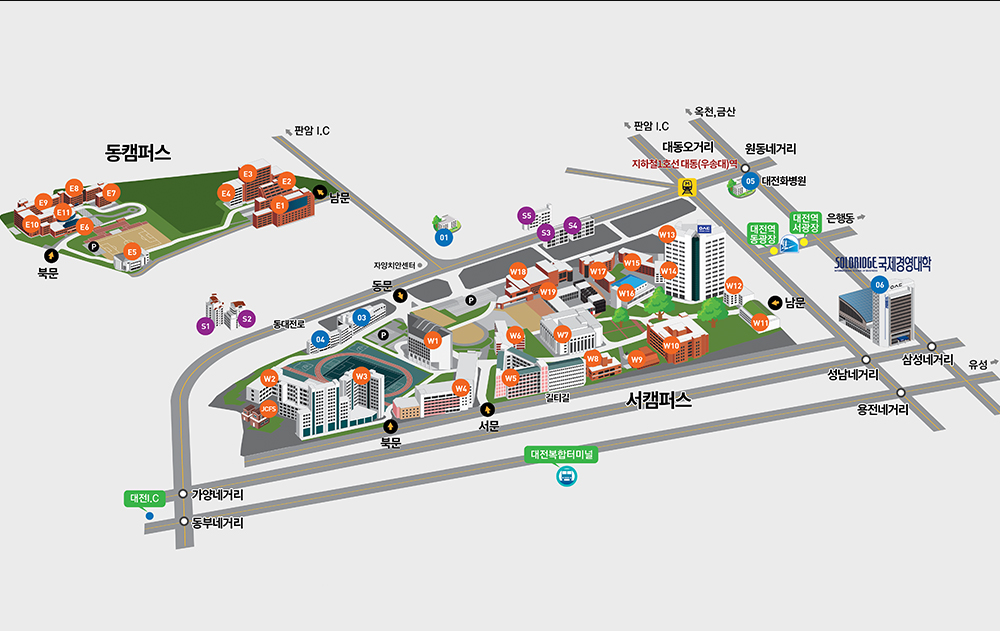

제공된 배치도는 건물 번호와 상대 위치 확인용입니다. GPS 좌표가 아니므로 실제 지도에서 위치를 확인한 뒤 관리자 모드로 지정하세요.

위치 수정: 관리자 로그인 → 건물 검색 → 건물 선택 → '지도에서 위치 지정' → 실제 지도 위치 터치
학교 공식 캠퍼스맵과 건물 번호를 대조했어. 아래 위치 판정은 좌표의 출처·범위 검사를 뜻하며, 현장 출입구 검증을 의미하지 않아.
좌표가 틀리면 해당 건물을 선택 → 관리자 위치 수정. 클라우드 연결 시 학생 지도에도 반영돼.Supabase 연결을 확인하는 중...
관리자가 수정한 위치는 클라우드에 저장돼. JSON 백업도 별도로 보관할 수 있어.